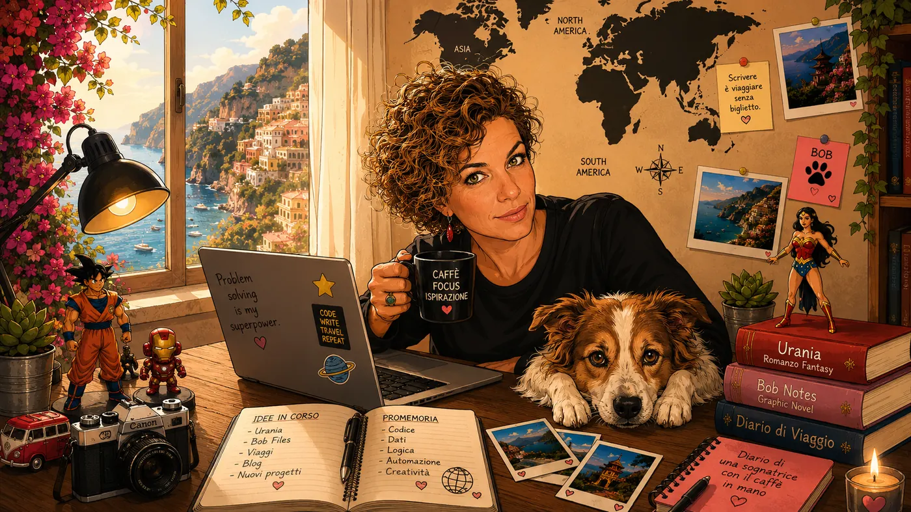
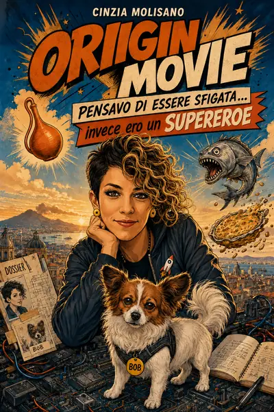

</>
INFORMATICA
Dati, sistemi, automazioni e soluzioni. Il posto dove logica e curiosità lavorano insieme.
SCOPRI DI PIÙ →IT Specialist · Scrittrice · Viaggiatrice
Sono Cinzia. Amo risolvere problemi complessi, raccontare storie e scoprire il mondo con occhi curiosi.


Pensavo di essere sfigata… invece ero un supereroe
Due nomi, un merluzzo sospetto e una frittata di pasta che la mia famiglia non ha mai dimenticato. Il mio libro illustrato è finalmente uscito.
Tutti i miei libri, anche le guide di viaggio →Il digitale incontra la creatività, i viaggi, i libri e tutto ciò che mi incuriosisce.
Dati, sistemi, automazioni e soluzioni. Il posto dove logica e curiosità lavorano insieme.
SCOPRI DI PIÙ →Storie, personaggi e mondi immaginari che prendono forma, una pagina alla volta.
SCOPRI DI PIÙ →Itinerari, fotografie e piccoli dettagli raccolti lungo la strada.
SCOPRI DI PIÙ →Gli anni '80, i personaggi che amo e qualche lettura recente.
SCOPRI DI PIÙ →Origin Movie, le guide di viaggio di Urania e il quaderno da riempire in viaggio: tutto quello che ho pubblicato.
SCOPRI I LIBRI →Lavoro nel mondo IT, dove passo buona parte del tempo a capire perché qualcosa non funziona e come farla funzionare meglio. Ma la stessa curiosità mi porta anche molto lontano dal codice: dentro una storia, su una mappa o nel mezzo dell'ennesimo progetto nato da un semplice “e se provassi a…?”.
Mi piace costruire cose che prima non c'erano: può essere uno strumento che semplifica il lavoro, un personaggio, una pagina web o un itinerario per un posto in cui non sono ancora stata.
Identità digitali, dati, automazioni e strumenti costruiti partendo da problemi reali.
Romanzi, personaggi e libri illustrati: il posto in cui la logica può finalmente comportarsi male.
Mappe, luoghi salvati, fotografie e quella curiosità che rende difficile passare davanti a una deviazione senza prenderla.
Se un'idea continua a tornarmi in mente, prima o poi finisce per diventare qualcosa di concreto.
Alcuni nascono dal codice, altri da una storia o da un viaggio. Sono progetti diversi, ma hanno tutti la stessa origine: un'idea che avevo voglia di trasformare in qualcosa di reale.
Un romanzo tra mistero, identità e legami. Il progetto narrativo più intimo del sito, raccontato senza svelarne troppo.
ENTRA NEL MONDO DI URANIA →Non ero sfigata: stavo solo facendo l'origin story. Autobiografia, ironia e fantasia, con Bob e i suoi fascicoli investigativi.
SCOPRI IL LIBRO →Utility, automazioni e strumenti nati da problemi reali: il lato del sito in cui il lavoro quotidiano diventa progettazione e codice.
SCOPRI LA PARTE INFORMATICA →La dashboard condivisa dei viaggi: itinerario, hotel, voli, treni, prenotazioni e informazioni utili sempre a portata di mano.
SCOPRI IL TRAVEL HUB →Una bambina zombie felice, un geco e una valigia piena di misteri. Libro illustrato in lavorazione e cartone animato su YouTube.
SCOPRI LA SERIE →
Un titolo cambiato, un cane investigatore e una frittata di pasta: il percorso dalla prima idea al libro su Amazon.
Formato, abbondanza, 300 DPI e immagini a tutta pagina: cosa ho imparato impaginando per Amazon KDP.
Perché il codice, per me, arriva sempre dopo: come una procedura ripetuta trenta volte diventa un tool.
Per progetti, collaborazioni, scrittura o semplicemente per scambiare due parole, puoi scrivermi direttamente via e-mail.